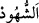
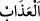
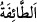

olan hâkim veya celde vuran kimse yahut orada hazır bulunanlardan biri özelikle de
oğlu ve kardeşi gibi yakın akrabasından olanlar ona acır. Dolayısıyla Allah’ın koyduğu
cezâyı tam anlamıyla uygulayamaz; sayıyı yüze tamamlamayıp eksik bırakır veya
gerekenden daha hafif vurur. İşte bu sebeplerden dolayı Allah Teâlâ hadlerini
uygularken en ufak bir merhameti dahi yasaklamıştır.
Burada Allah Teâlâ’nın bir işi emrettiğinde onu yerine getirirken merhamet
göstermenin nâhoş olduğuna dikkat çekilmektedir. Bir hadiste şöyle buyrulmuştur:
“Kıyâmet günü had uygularken bir celdeyi eksik bırakmış bir vâli getirilip niçin
böyle yaptığı sorulur. O da: “Kullarına acıdığım için.” der. Bunun üzerine: “Sen
benden daha mı merhametlisin? Götürün bunu cehenneme” denilir. Sonra bir celde
fazla vurmuş biri getirilip niçin böyle yaptığı sorulur. O ise: “Kullarını sana
mâsiyetten men’etmek için.” der. Ona da: “Hüküm koyma bakımından sen benden
daha mı üstünsün?” denir. Sonra da cehenneme atılması emrolunur.”[111]
el-Es’iletü’l-müfhıme’de der ki: “Allah (hadlerini uygularken) merhamet etmeyi ve
acımayı yasaklamıştır. Günaha düşmüş müslüman bir kardeşine kalbinde acıma duyan
bir kimse ise bundan dolayı kınanmaz.” denilirse, bunun cevabı şudur: Allah Teâlâ’nın
yasakladığı acıma, insanın fıtratından kaynaklanan acıma değildir. Çünkü gayr-i ihtiyârî
husûle gelen bu acımadan insan sorumlu değildir. Cenâb-ı Hak bununla hadlerinin
tatbikini engelleyen ve şerîatın ahkâmının iptâline yol açan bir acımayı kasdetmiştir. İşte
yasaklanan acıma budur.”
Bahru’l-ulûm’da der ki: “Bu âyette muhâtapların zinâ haddini uygulamada gayretli
olmalarına ve vururken hafifçe değil acıtacak şekilde vurmalarına delâlet vardır.
Zührî’ye göre kazf (iftirâ) haddini tatbikte de aynı şekilde davranılmalıdır. İçki içme
haddi ise böyle değildir. Katâde’den nakledildiğine göre içki içme ve kazf hadlerinde
hafif vurulur, zinâda ise şiddetli vurulur.”
“Mü’minlerden bir gurup da onlara uygulanan cezâya şâhid olsun”
“__WORD__, hazır bulunmak; “__WORD__ ise şiddetli acı vermek demektir. Bazıları ta’zîbin,
sopanın azbesi, yâni kenarıyla çokça vurmak anlamında olduğunu söylemiştir. Bunun
anlamının başka olduğu da söylenmiştir. Uygulanan celdenin “azâb” diye
isimlendirilmesi, bunun bir cezâ olduğuna delildir. Azâb diye adlandırılması aynı suçun
ikinci kez işlenmesine mânî olan bir elem olduğu içindir. “__WORD__, gurup/fırka demektir.
Bir şey etrafında halka hâlinde bulunan bir kısım kimseler anlamına gelmesi de
mümkündür. Burada zinâ haddini teşhîr etmek ve başkalarına da bu gibi fiillere
teşebbüsten alıkoymak gayesini gerçekleştirmek üzere toplanan bir gurup mânâsı
kasdedilmiştir.
Âyette “mü’minlerden” buyrulması, fâsık kimsenin kavminin sâlihlerinden daha çok
utanması sebebiyledir. Mü’minlerden bir grubun cezânın tatbîki esnâsında hazır
bulunmaları emrinin zâhiri vücûb ifâde ettiği halde fakihler bunun müstehab olduğunu
söylemişlerdir. Mü’minlerden bir gurubun orada hazır bulunması verilen cezâyı